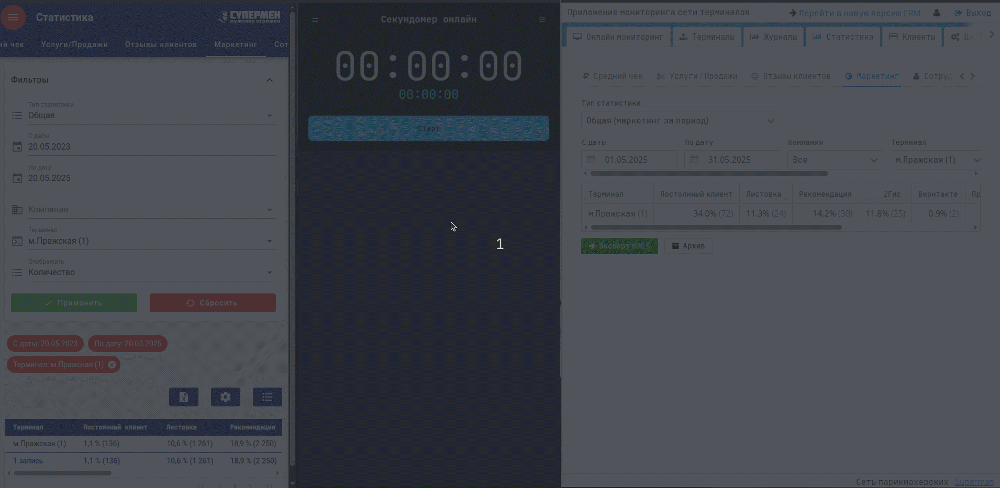
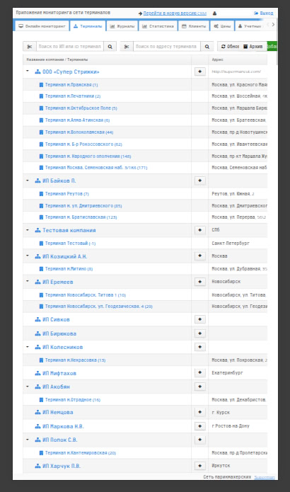
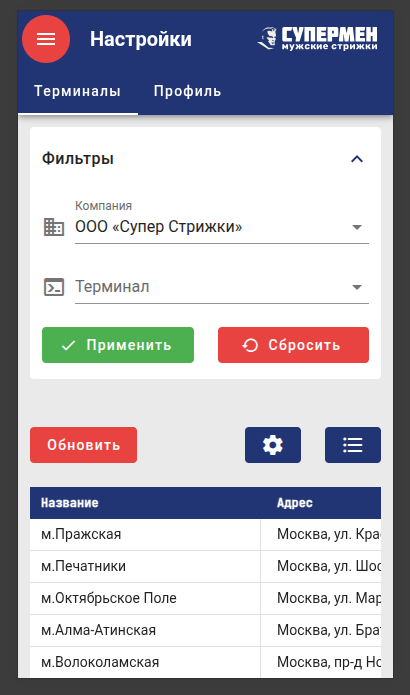
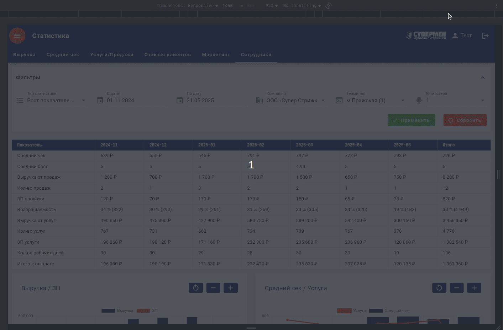
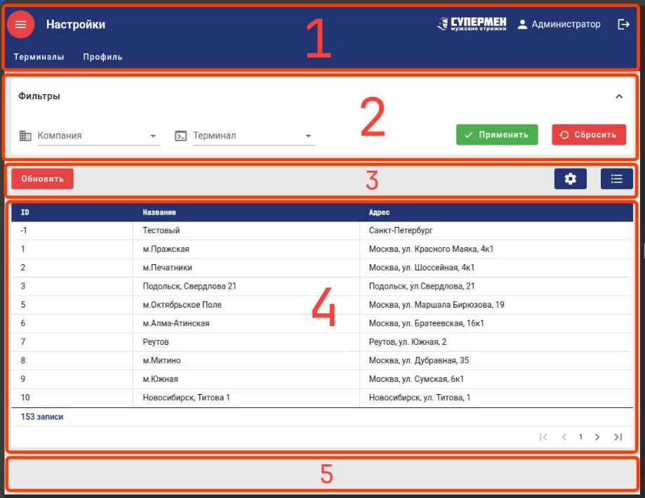
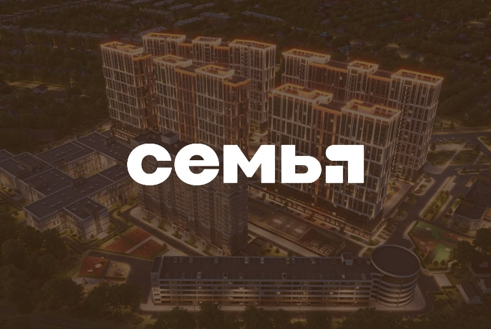

01
О проекте
Разработали фронтенд CRM-системы с высокой производительностью и адаптивным интерфейсом для масштабного бизнеса, обеспечив быстрый и стабильный доступ к данным даже при десятках тысяч пользователей.
Разработать современный, адаптивный интерфейс для CRM-системы. Новое решение должно исправить ошибки текущей реализации и обеспечить комфортный опыт взаимодействия с пользователем.
Разработали фронтенд CRM-системы с высокой производительностью и адаптивным интерфейсом для масштабного бизнеса, обеспечив быстрый и стабильный доступ к данным даже при десятках тысяч пользователей.
Франшиза барбершопа «Супермен» — одна из самых быстрорастущих сетей в эконом-сегменте бьюти-индустрии России. С момента запуска в 2018 году она открыла более 160 салонов. Ключевое отличие «Супермена» — максимальная автоматизация процессов. Вместо администратора используется терминал, а управление бизнесом осуществляется через собственную CRM-систему и клиентское приложение.
Основные проблемы старой CRM-системы:
CRM-система «Супермена» развивалась несколько лет без пересборки. Проект активно расширялся, со временем накапливались новые функции, но не менялась база: устаревший UI, монолитная архитектура, жестко зашитые компоненты. Поддержка стала дорогой, масштабирование — проблемным.
Одной из ключевых сложностей поддержки текущего проекта была необходимость постоянной доработки UI-компонентов. Система использует фреймворк Vaadin — это отличный фреймворк на Java для построения веб-интерфейсов! Но его версия в проекте давно не обновлялась, а миграция через несколько релизов была рискованной и трудозатратной. Разработка новых фич замедлялась из-за сложности поддержки.
Сложные запросы к БД грузили сервер до предела. Многие компоненты не предполагали постраничную загрузку, приходилось загружать весь объем данных сразу, что критично снижало производительность.
В старой CRM некоторые разделы загружались настолько долго, что можно было успеть сходить за чаем и вернуться — а загрузка все еще шла. Для сравнения: в новой CRM раздел с фильтрами по двум годам открывается быстрее, чем в старой — с фильтром всего на один месяц. И это при том, что в старой системе до завершения запроса нельзя было перейти в другие разделы.

Еще одна причина для глобального перезапуска — необходимость в адаптивном интерфейсе. Работа со смартфона была практически невозможна — элементы сдвигались, кнопки накладывались друг на друга, фильтры уезжали за пределы экрана. Все это мешало работать «на ходу», когда под рукой есть только смартфон.
Вот интерфейс системы «до» и «после»:


Совместно с технической командой клиента решили двигаться не через доработки, а через полный редизайн клиентской части. Мы сосредоточились на фронтенде, команда заказчика — на серверной части. Такой подход позволил работать параллельно и не терять время.
Старую логику частично рефакторили, частично переписали, но основной фокус был на производительности, масштабируемости и UX.
Выбор стека технологий для реализации поставленной задачи пал на связку Nuxt + Vuetify.
Nuxt отлично подходит для построения веб-приложений, ориентированных на клиент-серверное взаимодействие. Мы давно и успешно используем этот фреймворк в своих проектах.
Vuetify — крупная UI-библиотека, в которой есть все необходимые компоненты и очень, очень широкий API. Использование Vuetify позволило сэкономить время на разработке самих компонентов и сосредоточиться на их грамотном применении. Кроме того, библиотека построена по дизайн-системе Material Design от Google, что дает нам и современный стиль, и удобство использования, и практически полную адаптивность «из коробки».
Комбинация двух сильнейших инструментов дала ожидаемый результат: мы разработали современный интерфейс, который отлично выглядит на любом устройстве.

Интерфейс проектировали с учетом опыта пользователей старой системы: сохранили привычную структуру, добавили гибкость и адаптацию под любые экраны. Система включает более 50 страниц, на каждой — собственные фильтры, таблицы, графики. Все это собрано в единую структуру, способную подстроиться под любые задачи:

Вместо попыток «залатать» старую систему мы пошли другим путем — собрали продукт с нуля, учтя все узкие места прежней реализации. Результат — производительная CRM, которая справляется с большими объемами данных, работает стабильно на всех устройствах и готова к новым вызовам.
Огромное спасибо ребятам из команды «Супермена» — с ними приятно решать даже самые масштабные задачи!
Если вам важно не просто «сделать красиво», а собрать систему, которая растет вместе с бизнесом, — посмотрите другие наши кейсы или загляните в раздел с услугами, чтобы узнать, чем еще мы можем быть полезны.
